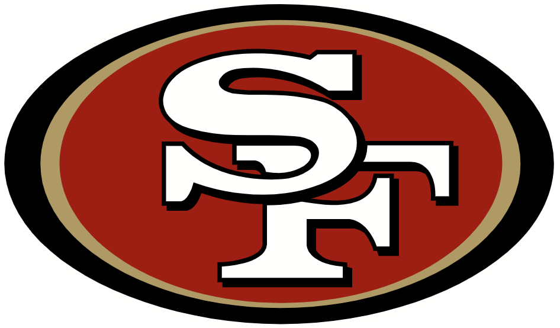

Se llevó acabo el segundo día de prácticas en los OTAs que están realizando los San Francisco 49ers. Por cierto este martes fue el primer día de prácticas abiertas para los medios de comunicación ya que los OTAs iniciaron desde el lunes 23 de mayo. Este martes hubo muchos aspectos para destacar.